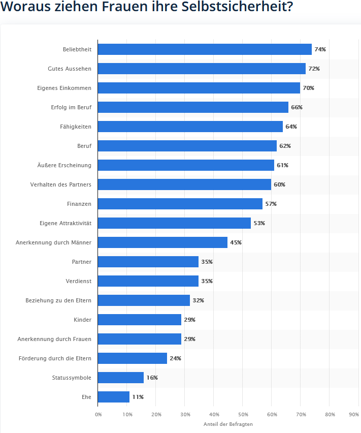
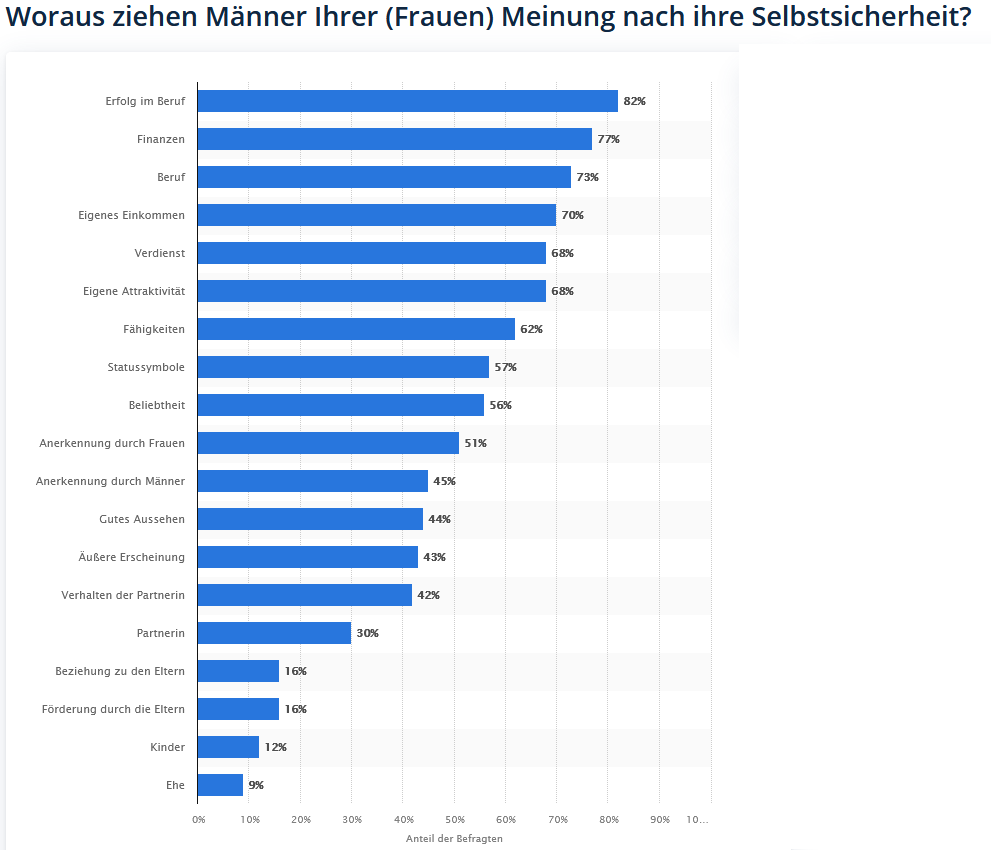

click here for English translation
Fast alle Menschen leiden zu einem gewissen Grad unter
Minderwertigkeitsgefühlen.
Die wenigsten Menschen haben den Eindruck, so wie sie sind zu genügen.
Bei der Vorstellung, nicht genug zu sein, handelt es sich um
Glaubenssätze, die aufgrund von Erfahrungen mit dem Umfeld entwickelt
wurden, denen sich der Einzelne oftmals aber gar nicht bewusst ist. So
glaubt man "zu dick", "zu dumm", "zu alt", "zu jung", "zu naiv", "zu
unerfahren", "zu ....." zu sein, ohne die Richtigkeit dieses
Glaubenssatzes überhaupt hinterfragt zu haben.
Von sog. "erfolgreichen" Menschen glauben wir, dass sie ein extremes
Selbstbewusstsein haben, aber gerade diese Menschen, die immer im
Rampenlicht stehen wollen, immer die Besten sein müssen, leiden oft
massiv unter fehlendem Selbstbewusstsein und versuchen nur, dieses zu
kaschieren.
Insbesondere für Menschen, die bereits im Kindesalter Ablehnung oder
Ausgrenzung erlebt haben oder keine sichere Bindung zu ihren Eltern
herstellen konnten, ist Selbstsicherheit ein essentielles Thema.
In toxischen Beziehungen geht es in der Regel darum, das
Selbstbewusstsein des anderen gezielt durch manipulative Methoden
auszuhöhlen.
Je mehr der Selbstwert im Außen gesucht wird, um so größer die
Selbstunsicherheit und damit verbundene Minderwertigkeit, wenn die von
außen erwarteten Bestätigungen ausbleiben.

Quelle: IfD Allensbach, Erhebung 2022 mit 800 Frauen im Alter
zwischen 20 und 49 Jahren
gestellte Frage:
Woraus Menschen Selbstsicherheit ziehen, ist ja ganz
verschieden.
Wovon hängt es nach Ihren Beobachtungen besonders ab, ob Frauen
selbstsicher sind?
Was von dieser Liste hier ist besonders wichtig?

Quelle: IfD Allensbach, Erhebung 2022 mit 800 Frauen im Alter
zwischen 20 und 49 Jahren
gestellte Frage:
Woraus Menschen Selbstsicherheit ziehen, ist ja ganz verschieden.
Wovon hängt es nach Ihren Beobachtungen besonders ab, ob
Männer selbstsicher sind?
Was von dieser Liste hier ist
besonders wichtig?